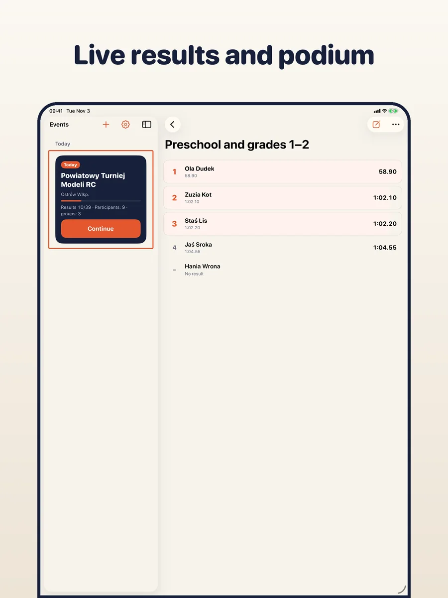
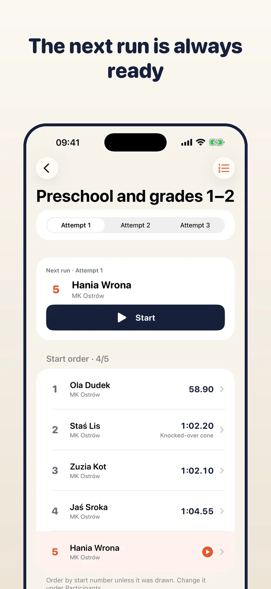
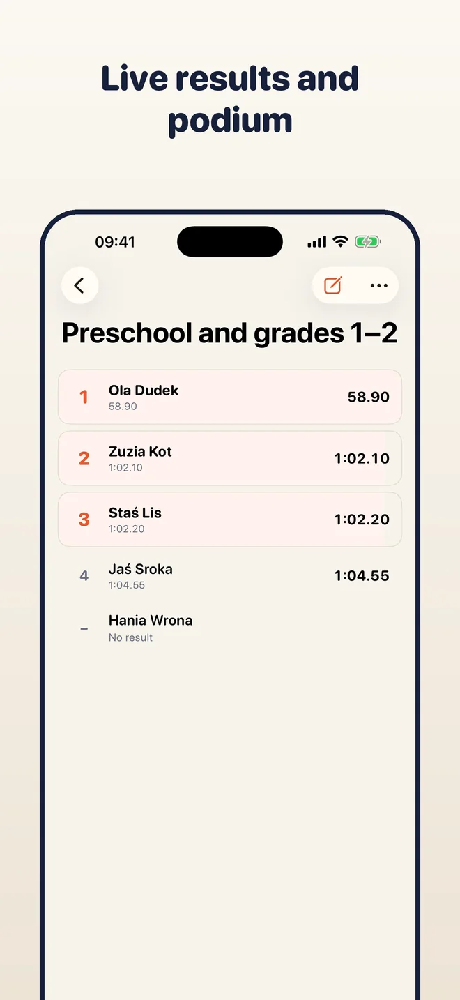
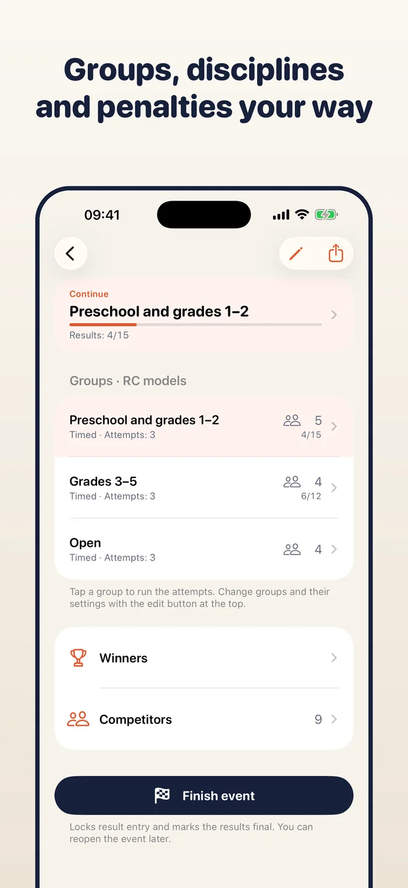
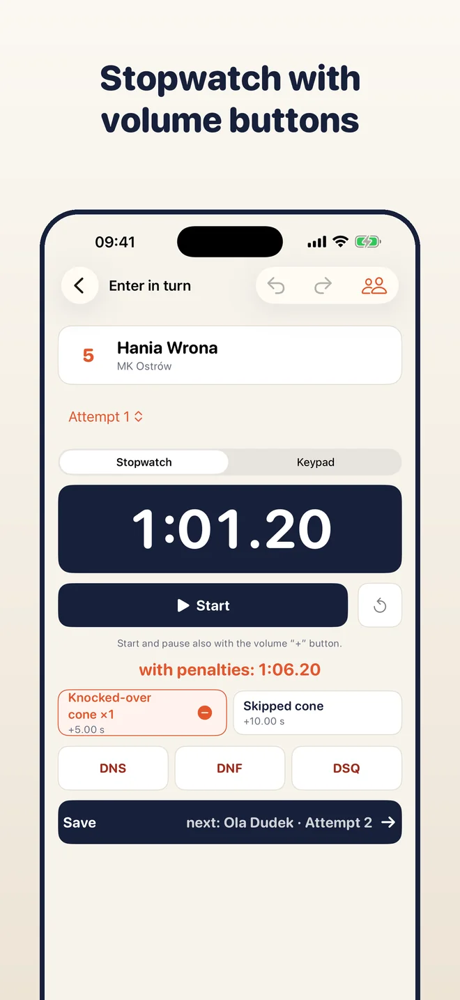
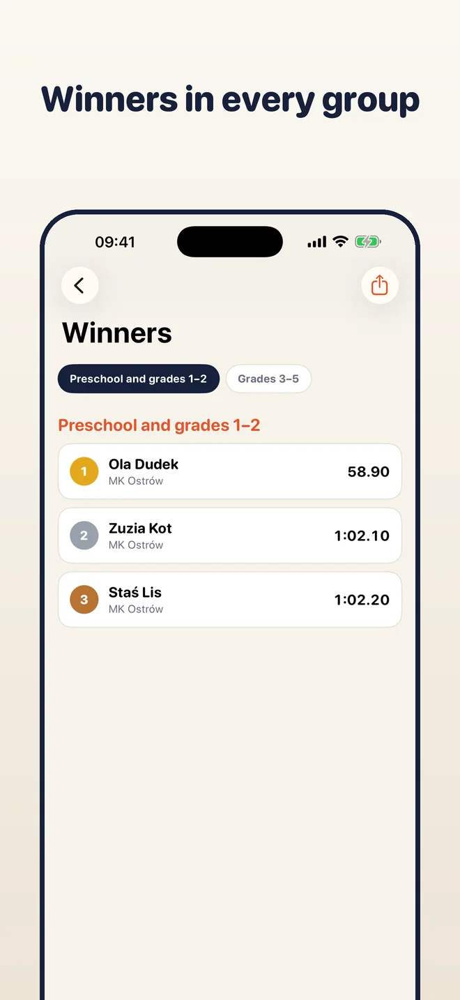
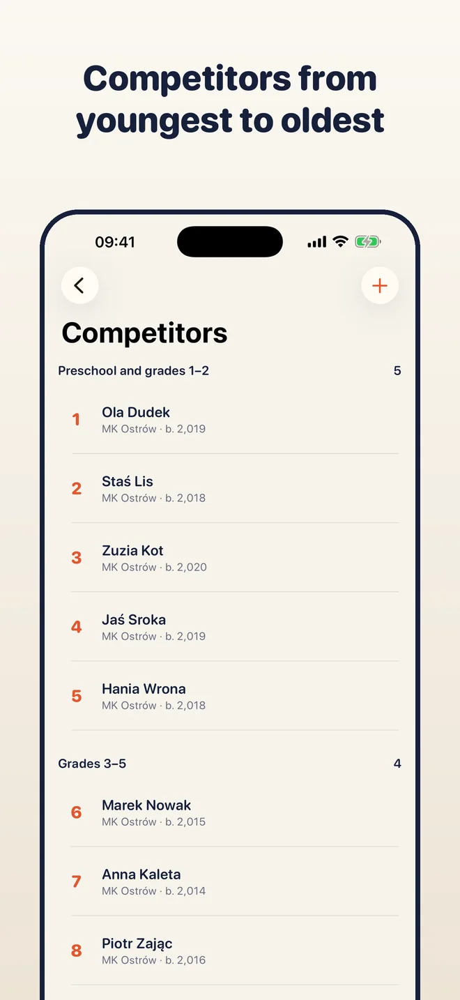

On iPhone, iPad and Mac
One app, one purchase: free on all three. Your phone times the runs, the Mac or iPad shows the whole event. With iCloud sync (optional) they share the same data.



Create groups, add participants, time every run and enter the results. Places, ties, team and general classification update by themselves, ready for a PDF, a CSV or a podium picture. Everything stays on your device.
iPhone · iPad · Mac

Pick a kind of contest, then add groups such as age classes or Open. Each group has its own number of tries, way of counting and penalties.

The app shows who is next. Start the stopwatch, add a penalty with one tap and the time goes straight into the result.

Standings, ties and winners are always up to date. Export a PDF, a CSV, a podium picture for social media or a backup of the whole event.
Best run, sum of the best, average, N of M rounds, jury ratings, sectors, stages. Ready presets and your own rules.
RC models, angling, fire sport and more. One person can start in several groups, for example their own and Open.
Start and pause with a tap or the volume-up button. The time lands in the result; penalties are chips under it.
Start numbers set the order in a group. Draw it or drag people to change it; the next participant is always shown.
Places, ties and incomplete results are worked out as you enter them. Winners per group, with team and general classification.
Close the event to mark the results as final, and reopen it if something needs fixing.
Share a results sheet, a spreadsheet, a podium image or a .tallyboard backup of the whole event.
No account, no ads and no server of ours. Results stay on your device, or in your own iCloud if you turn sync on.
One app, one purchase: free on all three. Your phone times the runs, the Mac or iPad shows the whole event. With iCloud sync (optional) they share the same data.



Tallyboard has no paywall and no limits. If it helps you, you can support its development with an optional tip.
Tips are one-off purchases handled by Apple. The app never sees your payment details.
The ready rules are examples based on common regulations. They do not replace the official rulebook of your contest; the organiser is responsible for the rules and the final results.
No. There are no accounts and no ads.
On your device. If you turn on iCloud sync it is also in your private iCloud. We have no server and no access to your data.
Any contest where people take turns and are ranked by time, points or ratings: RC, angling, fire sport, jury contests, autocross and more. If the ready rules do not fit, build your own.
Yes. Turn on iCloud sync in Settings, or move an event with a .tallyboard backup file.
Polish, English, German, Spanish and Italian.
Free for iPhone, iPad and Mac. No account.
Download on the App Store